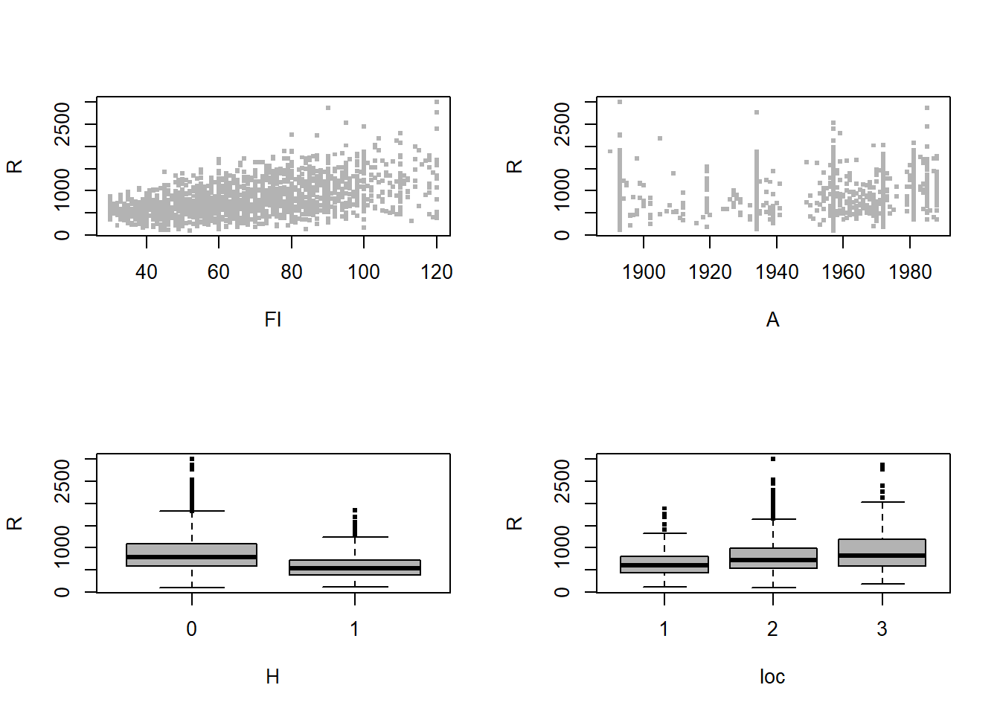

GAMLSS
2023-03-13
Capítulo 1 Introdução
library(knitr)
library(gamlss)## Carregando pacotes exigidos: splines## Carregando pacotes exigidos: gamlss.data##
## Attaching package: 'gamlss.data'## The following object is masked from 'package:datasets':
##
## sleep## Carregando pacotes exigidos: gamlss.dist## Carregando pacotes exigidos: MASS## Carregando pacotes exigidos: nlme## Carregando pacotes exigidos: parallel## ********** GAMLSS Version 5.4-3 **********## For more on GAMLSS look at https://www.gamlss.com/## Type gamlssNews() to see new features/changes/bug fixes.library(xtable)
PPP <- par(mfrow=c(2,2))
plot(R~Fl, data=rent, col=gray(0.7), pch=15, cex=0.5)
plot(R~A, data=rent, col=gray(0.7), pch=15, cex=0.5)
plot(R~H, data=rent, col=gray(0.7), pch=15, cex=0.5)
plot(R~loc, data=rent, col=gray(0.7), pch=15, cex=0.5) 
par(PPP)
# ----eval=FALSE----------------------------------------------------------
## R ~ Fl+A+H+loc
## ----cache=TRUE----------------------------------------------------------
r1 <- gamlss(R ~ Fl+A+H+loc, family=NO, data=rent, trace=FALSE)
l1 <- lm(R ~ Fl+A+H+loc,data=rent)
coef(r1)
coef(l1)
## ----tidy=TRUE, tidy.opts=list(width=60)---------------------------------
fitted(r1, "sigma")[1]
summary(r1)
## ------------------------------------------------------------------------
Rsq(r1)
## ----LM_residual_plot,echo=TRUE,fig.show='hide', fig.asp=1---------------
plot(r1)
## ----cache=TRUE----------------------------------------------------------
### using gamlss
r2 <- gamlss(R ~ Fl+A+H+loc, family=GA, data=rent)
coef(r2)
coef(r2, "sigma") ### extract log(sigma)
deviance(r2)
### using glm
l2 <- glm(R ~ Fl+A+H+loc, family=Gamma(link="log"), data=rent)
coef(l2)
summary(l2)$dispersion ### extract phi
deviance(l2)
## ------------------------------------------------------------------------
summary(r2)
## ------------------------------------------------------------------------
r22 <- gamlss(R ~ Fl+A+H+loc, family=IG, data=rent, trace=FALSE)
GAIC(r1, r2, r22, k=0) # GD
## ----GLM_residual_plot,echo=TRUE,fig.show='hide', fig.asp=1--------------
plot(r2)
## ----cache=TRUE----------------------------------------------------------
r3 <- gamlss(R ~ pb(Fl)+pb(A)+H+loc, family=GA, data=rent,
trace=FALSE)
AIC(r2,r3)
## ------------------------------------------------------------------------
summary(r3)
## ----cache=TRUE----------------------------------------------------------
drop1(r3)
## ----GAM_termplot, echo=TRUE,fig.show='hide', fig.asp=1,cache=TRUE-------
term.plot(r3, pages=1, ask=FALSE)
## ----GAM_wormplot, echo=TRUE,fig.show='hide', fig.asp=1,cache=TRUE-------
wp(r3, ylim.all=.6)
## ----cache=TRUE----------------------------------------------------------
r4 <- gamlss(R ~ pb(Fl)+pb(A)+H+loc, sigma.fo=~pb(Fl)+pb(A)+H+loc,
family=GA, data=rent, trace=FALSE)
r5 <- gamlss(R ~ pb(Fl)+pb(A)+H+loc, sigma.fo=~pb(Fl)+pb(A)+H+loc,
family=IG, data=rent, trace=FALSE)
AIC(r3, r4, r5)
## ----MADAM_termplot, echo=TRUE,fig.show='hide', fig.asp=1,cache=TRUE-----
term.plot(r4, pages=1, what="sigma", ask=FALSE)
## ----cache=TRUE----------------------------------------------------------
drop1(r4, what="sigma")
## ----MADAM_wormplot, echo=TRUE,fig.show='hide', fig.asp=1,cache=TRUE-----
wp(r4, ylim.all=.6)
## ----cache=TRUE----------------------------------------------------------
r6 <- gamlss(R ~ pb(Fl)+pb(A)+H+loc, sigma.fo=~pb(Fl)+pb(A)+H+loc,
nu.fo=~1, family=BCCGo, data=rent, trace=FALSE)
r7 <- gamlss(R ~ pb(Fl)+pb(A)+H+loc,sigma.fo=~pb(Fl)+pb(A)+H+loc,
nu.fo=~pb(Fl)+pb(A)+H+loc, family=BCCGo, data=rent,
trace=FALSE)
AIC(r4, r6, r7)
## ----WP_BCCG1_CH1, echo=TRUE, fig.show='hide', fig.asp=1-----------------
wp(r6, ylim.all=.6) ; title("r6: BCCG(mu, sigma)")
wp(r7, ylim.all=.6) ; title("r7: BCCG(mu, sigma, nu)")
## ----eval=FALSE----------------------------------------------------------
## exercises Chapter 1
##-------------------------------------------------------------------------
## data(airquality)
## plot(airquality[,-c(5,6)])
## ----eval=FALSE----------------------------------------------------------
## # Fit the standard linear model
## air.lm <- lm(Ozone~Temp+Wind+Solar.R,data=airquality)
## summary(air.lm)
## ----eval=FALSE----------------------------------------------------------
## op<-par(mfrow=c(1,3))
## termplot(air.lm,partial.resid=TRUE,se=T)
## par(op)
## ----eval=FALSE----------------------------------------------------------
## op<-par(mfrow=c(1,2))
## plot(air.lm,which=1:2)
## par(op)
## ----eval=FALSE----------------------------------------------------------
## library(gamlss)
## da <- na.omit(airquality) # clear the data of NA's
## mno<-gamlss(Ozone~Temp+Wind+Solar.R, data=da) # fit the model
## summary(mno)
## ----eval=FALSE----------------------------------------------------------
## term.plot(mno, pages=1, partial=T) # plot the fitted terms
## ----eval=FALSE----------------------------------------------------------
## plot(mno)
## wp(mno)
## ----eval=FALSE----------------------------------------------------------
## # fit different distributions
## mga <- gamlss(Ozone~Temp+Wind+Solar.R, data=da, family=GA)
## mig <- gamlss(Ozone~Temp+Wind+Solar.R, data=da, family=IG)
## mbccg <- gamlss(Ozone~Temp+Wind+Solar.R, data=da, family=BCCGo)
## GAIC(mno, mga, mig, mbccg)
## ----eval=FALSE----------------------------------------------------------
## # fit smoothers
## mga1=gamlss(Ozone~pb(Temp)+pb(Wind)+pb(Solar.R),data=da,
## family=GA)
## term.plot(mga1, pages=1)
## plot(mga1)
## wp(mga1)
#-----------------#install.packages("gamlss.demo", dep=TRUE)
#Based on rpanel
library(gamlss.demo)
#Examples
#t family distribution
demo.TF()
#Skew Normal Type 1 distribution
demo.SN1()
#Box-Cox Power Exponential distribution
demo.BCPE()
#Demos for smoothing techniques
demo.BSplines()
demo.PSplines()
demo.interpolateSmo()
demo.histSmo()
#Interface for demonstrating the gamlss.family distributions
demoDist()
#Demo for local polynomial smoothing
demoLpolyS()
#The demo for gamlss distributions and smoothing
gamlss.demo()